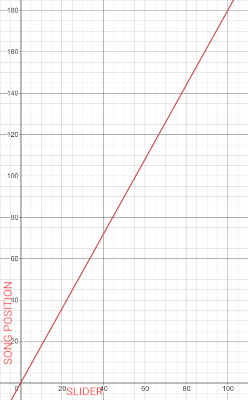

Variable Map
Allows you to take the input from a certain range and map it to another range.
For example, let's say you have:
- a UI slider that goes from 0 to 100
- a song whose length is 180 seconds
If you want to use the above slider to seek to a certain position on that song, you'll need to convert the 0-100 range to the 0-180 range.
Using the Variable Map action you can do that very easily by setting
- Input to whatever position the slider is in
- Input Minimum and Input Maximum to 0 and 100 respectively (corresponding to the total range on the slider)
- Output Minimum and Input Maximum to 0 and 180 respectively (corresponding to the range of seconds the song has)
If you set the input to 50 for example (which is the middle point in the input range), you'll get an output of 90 (which is the middle point of the song in seconds)
The above use case could be translated into the following graphic:

Action Inputs
Invert
Will map the output in reverse.
In the above example, if you set the input to 10, you'd get an output of 18. If you enable Invert you'll get an output of 162 instead (which is the max value of the output range minus 18)
Restrict Range
Will not allow the output to be outside of the output range.
In the above example, if you set the input to 110 (which is outside of the input range) you'd normally get an output of 198 (which is outside of the output range). By enabling Restrict Range you'll get an output of 180 instead (which is the max of the output range)